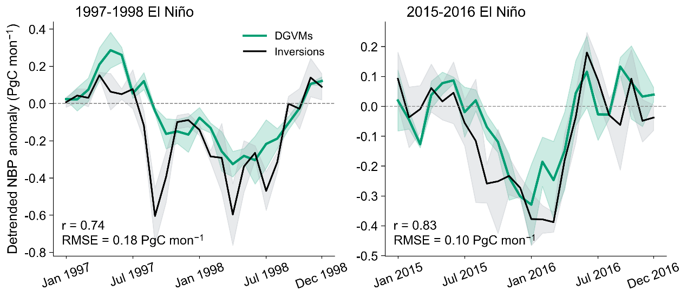
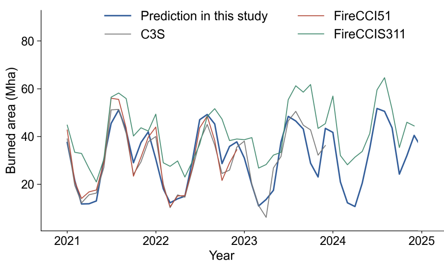
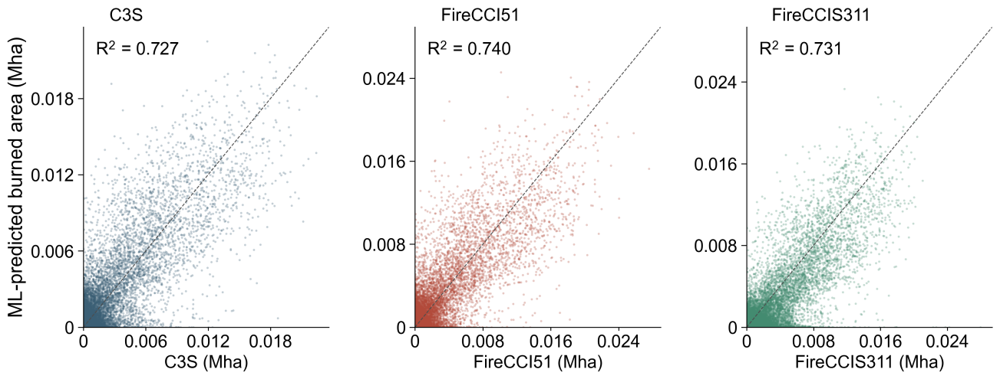

How well do our models reproduce land-carbon responses during past El Niño events and historical fire activity?
Land carbon · 1997–1998 and 2015–2016
Carbon responses during past El Niño events
ORCHIDEE-MICT and JULES reproduce the main monthly evolution of global land-carbon anomalies during two strong El Niño events. Their combined estimate, however, underestimates the cumulative weakening of the land carbon sink.

Monthly evolution
The models capture the broad timing and progression of the carbon anomalies in both events.
Cumulative sink weakening
Sink weakening is smaller in the models than in the inversion estimates: about 1.2 versus 3.4 Pg C in 1997–1998, and 1.2 versus 2.2 Pg C in 2015–2016.
Historical simulations are evaluated against carbon-flux estimates inferred from atmospheric CO2 measurements.
Fire · Satellite comparisons
Historical burned-area performance
Our machine-learning framework captures the broad seasonality and spatial patterns of burned area. Comparisons with satellite products also show where estimates differ.

Seasonal variation
Monthly burned area agrees closely with FireCCI51 and C3S. FireCCIS311 generally reports higher burned area, partly because it detects more small fires.
Spatial agreement
Grid-cell burned area averaged over each comparison period has R2 values of 0.73–0.74 against the three satellite products.
View the spatial comparisons

The spatial R2 values describe agreement in burned area averaged over the historical comparison periods. Biases remain in regions with low burned area.